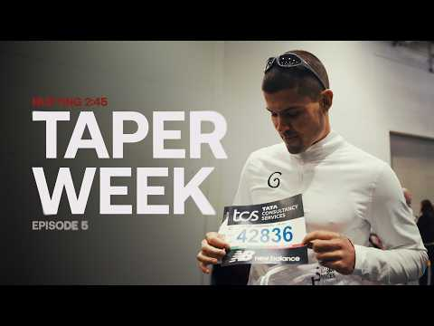
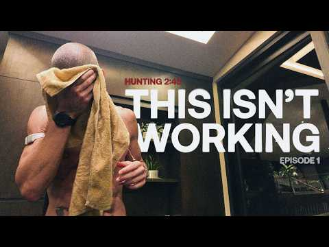
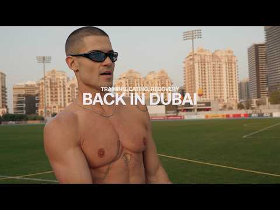

Goodwin Generated
Mission America.
William Goodge will run 50 marathons across all 50 United States in record time. One country. One man. One goal.
Inside the miles with William Goodge.
Preparing for a 100 mile race | Keys 100
London Marathon 2026 | Hunting 2:45 | Race Day

London Marathon Taper Week
Fastest Session of Marathon Prep
We're Thinking Long Term Now
Back On Track…

Something Didn't Feel Right…

Week In My Life: Learning From Failure
Why I DNF'd The 100 Mile Ultra
Training With The Best Cyclists In The World
How Fast Can I Run A Half Marathon?
Announcing My Next World Record Attempt
Preparing for a 100 mile race | Keys 100
London Marathon 2026 | Hunting 2:45 | Race Day
London Marathon Taper Week
Fastest Session of Marathon Prep
We're Thinking Long Term Now
Back On Track…
Something Didn't Feel Right…
Week In My Life: Learning From Failure
Why I DNF'd The 100 Mile Ultra
Training With The Best Cyclists In The World
How Fast Can I Run A Half Marathon?
Announcing My Next World Record Attempt
The hardest endurance project ever attempted on American soil.
On paper it's a number: 50 / 50. In practice it's 2 to 3 marathons every single day for three weeks — fifty marathons, in fifty states, in fifty different climates, encountering different weather systems and managing time zones.
Goodwin Generated Mission America is the first chapter of the Goodwin Endurance Series — an ultra endurance event that pushes the limits of any human. The Goodwin Company backs athletes attempting things history hasn't seen yet. We chose William Goodge to kick off the series because he doesn't talk about limits. He runs through them.
Every step is in service of a larger purpose: raising awareness and funds for cancer research, in memory of Goodge's mother Amanda, and proving what becomes possible when world-class athletes get world-class infrastructure behind them.

William Goodge doesn't run far.
He runs forever.
British ultrarunner, author of Rules for Running, and one of the most documented long-distance athletes of his generation. Goodge known by some as the fastest man to run across Australia, as he crossed the country on foot in just over 35 days, has also run from Los Angeles to New York in 55 days, and spent the last decade engineering a body and mind capable of what most consider biologically impossible.
Now he turns to the steepest test of his career: a marathon every 9.6 hours, across all 50 states, in record time.
He runs in memory of his mother, Amanda, who died of non-Hodgkin's lymphoma in 2018. Every project he takes on is a fundraiser. Every mile is a tribute.

Coast to coast to coast.
The route is built around aviation logistics, weather windows, and recovery science. Here's how the record breaking journey will unfold.
- 1HawaiiHonoluluOct 9
- 2AlaskaAnchorageOct 10
- 3OregonPortlandOct 10
- 4WashingtonVancouverOct 11
- 5UtahSalt Lake CityOct 11
- 6IdahoIdaho FallsOct 12
- 7MontanaBozemanOct 12
- 8North DakotaBowmanOct 13
- 9South DakotaKeystoneOct 13
- 10WyomingSundanceOct 14
- 11NebraskaMorrillOct 14
- 12ColoradoDenverOct 15
- 13New MexicoAlbuquerqueOct 15
- 14TexasDallasOct 16
- 15OklahomaAftonOct 16
- 16KansasKansas CityOct 17
- 17MissouriKansas CityOct 17
- 18MinnesotaMinneapolisOct 17
- 19IowaLansingOct 18
- 20WisconsinDe SotoOct 18
- 21IllinoisChicagoOct 19
- 22IndianaSouth BendOct 19
- 23MichiganSturgisOct 19
- 24OhioColumbusOct 20
- 25ArizonaWillow Beach / Hoover DamOct 20
- 26CaliforniaLos AngelesOct 21
- 27NevadaLas VegasOct 21
- 28ArkansasLittle RockOct 22
- 29LouisianaShreveportOct 22
- 30MississippiMeridianOct 23
- 31AlabamaTuscaloosaOct 23
- 32FloridaMiamiOct 24
- 33GeorgiaAtlantaOct 24
- 34South CarolinaGreenvilleOct 25
- 35North CarolinaAshevilleOct 25
- 36TennesseePigeon ForgeOct 25
- 37VirginiaNortonOct 26
- 38KentuckyPikevilleOct 26
- 39West VirginiaHazeltonOct 27
- 40MarylandElktonOct 27
- 41DelawareGlasgowOct 28
- 42PennsylvaniaPhiladelphiaOct 28
- 43New JerseyTeterboroOct 29
- 44ConnecticutStamfordOct 29
- 45Rhode IslandProvidenceOct 30
- 46MassachusettsBostonOct 30
- 47VermontBrattleboroOct 30
- 48New HampshirePortsmouthOct 31
- 49MaineKitteryOct 31
- 50New YorkNew York CityNov 1
Four reasons this isn't a stunt — it's The Plan.
Proven over distance
Goodge ran across America once already — solo, 55 days, coast to coast. He's run 48 marathons in 30 days across the UK. Distance isn't theoretical for him. It's documented.
Aviation logistics
Goodwin technology turns a logistic nightmare into an efficient route. Travel between all 50 states becomes one continuous motion. No distractions. No wasted energy. A clear path to the next challenge as soon as a marathon ends.
Sports science backing
A 24/7 medical and recovery team — IV hydration, physio, sleep optimization, biometrics — operating like an F1 pit crew between every state.
Mental architecture
Goodge runs in memory of his mother. The 'why' is non-negotiable, and that's what separates a finish line from a wall.
Questions, answered.
When does Goodwin Generated Mission America take place?+
Is this a sanctioned race?+
How is travel between states handled?+
Will it be live-streamed?+
Who is William Goodge?+
What is the Goodwin Endurance Series?+
What is Goodwin's tie to endurance and why the Endurance Series?+
How do I submit my endurance challenges?+
Where can I meet up with team run within my state?+
How do I learn more about Goodwin Generated Mission America?+

Stand behind the impossible.
Goodwin Generated Mission America is a global event for the charter aviation industry, inviting brokers and operators to take part. Brand partnerships and media collaborations are planned for all 50 events. Now is your chance to be a part of this record breaking endeavor.
Get Involved